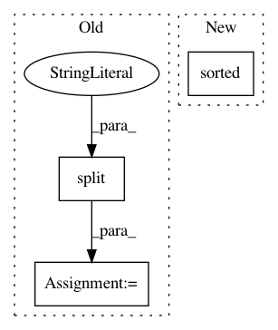

b8732f422d71819a250bd33e958766c4a709fbff,create_website.py,,build_index,#Any#Any#,381
Before Change
text_file.write(output_str)
def build_index(datasets, algorithms):
distance_measures = sorted(set([e.split("_")[-1] for e in datasets.keys()]))
sorted_datasets = sorted(set([e.split("_")[0] for e in datasets.keys()]))
output_str = get_html_header("ANN-Benchmarks")
output_str += get_index_description()
for dm in distance_measures:
output_str +=
<h3>Distance: %s</h3>
% dm.capitalize()
for ds in sorted_datasets:
for idd in sorted([e for e in datasets.keys() \
if e.split("_")[0] == ds and e.split("_")[-1] == dm], \
key = lambda elem: int(elem.split("_")[1])):
ds_name = query_info[idd]["dataset"] + " (k = " + \
str(query_info[idd]["count"]) + ")"
output_str +=
<a href="./%(name)s.html">
<div class="row" id="%(name)s">
<div class = "col-md-4 bg-success">
<h4>%(desc)s</h4>
</div>
<div class = "col-md-8">
<img class = "img-responsive" src="%(name)s.png" />
</div>
</div>
</a>
<hr />
% { "desc" : ds_name, "name" : idd }
output_str +=
<h2 id="algorithms">Results by Algorithm</h2>
<ul class="list-inline"><b>Algorithms:</b>
algorithm_names = algorithms.keys()
for algo in algorithm_names:
output_str += "<li><a href="//%(name)s">%(name)s</a></li>" % {"name" : algo}
output_str += "</ul>"
for algo in algorithm_names:
output_str +=
<a href="./%(name)s.html">
<div class="row" id="%(name)s">
<div class = "col-md-4 bg-success">
<h4>%(name)s</h4>
<dl class="dl-horizontal">
</dl>
</div>
<div class = "col-md-8">
<img class = "img-responsive" src="%(name)s.png" />
</div>
</div>
</a>
<hr /> % { "name" : algo}
output_str += get_index_footer()
with open(args.outputdir + "index.html", "w") as text_file:
text_file.write(output_str)
After Change
matching_datasets = [e for e in datasets.keys() \
if get_dataset_from_desc(e) == ds and \
get_distance_from_desc(e) == dm]
sorted_matches = sorted(matching_datasets, \
key = lambda e: int(get_count_from_desc(e)))
for idd in sorted_matches:
ds_name = get_dataset_from_desc(idd) + " (k = " + \
get_count_from_desc(idd) + ")"
output_str += get_row_desc(idd, ds_name)
In pattern: SUPERPATTERN
Frequency: 3
Non-data size: 3
Instances
Project Name: erikbern/ann-benchmarks
Commit Name: b8732f422d71819a250bd33e958766c4a709fbff
Time: 2018-02-24
Author: maau@itu.dk
File Name: create_website.py
Class Name:
Method Name: build_index
Project Name: sony/nnabla-examples
Commit Name: f1fca244a7b6bff0ff66a052b58d3a3798d74ecb
Time: 2020-03-20
Author: Takuya.Narihira@sony.com
File Name: imagenet-classification/create_input_files.py
Class Name:
Method Name: main
Project Name: pantsbuild/pants
Commit Name: be9ba87de9a026753137c9412bffc8deac61c1fb
Time: 2020-10-28
Author: 14852634+Eric-Arellano@users.noreply.github.com
File Name: src/python/pants/core/util_rules/subprocess_environment.py
Class Name: SubprocessEnvironment
Method Name: env_vars_to_pass_to_subprocesses